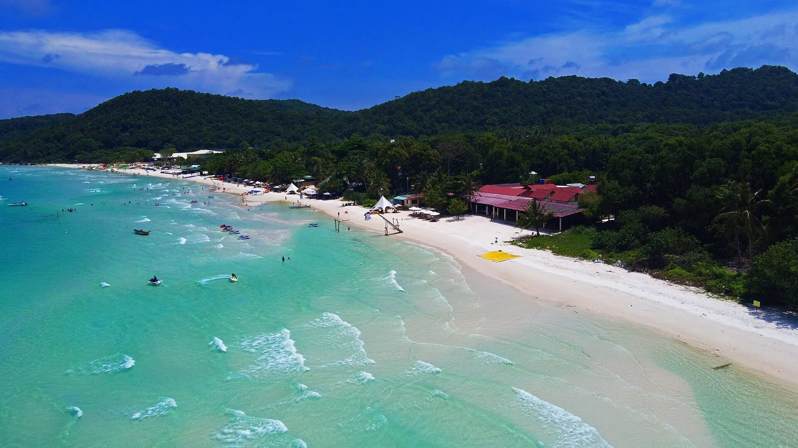

鲱鱼沙拉（Gỏi cá trích）
新鲜鲱鱼配椰丝和洋葱，用米纸和野菜卷着吃。

越南最大的岛屿富国岛有细白的沙滩、碧玉般的海水和西海岸壮丽的日落。富国岛还以鱼露、胡椒、珍珠和世界最长的跨海缆车闻名。
正在加载天气...
点击月份查看是否适合出行
Short afternoon downpours that pass quickly; some Saigon streets flood in heavy rain and high tides; seas around the southern islands get rough.
Plan outdoor activities in the morning and always carry a raincoat; boats to Nam Du and Phu Quoc may be cancelled in rough seas.
School holidays make beaches their busiest of the year.
Travel midweek and book early for better prices.
Monsoon winds bring rough seas; island tours and ferries may be cancelled.
Keep a spare day in case boats are cancelled.
Calm seas and clear skies – the most beautiful and busiest time.
Book resorts, island tours and the cable car ahead.
农历节日每年日期不同——出发前请确认官方日期。
新鲜鲱鱼配椰丝和洋葱，用米纸和野菜卷着吃。
粗面汤配肉质紧实鲜甜的咸宁花蟹。
Bun quay – stir your own dipping sauce
28 Bạch Đằng, Dương Đông 更新于 2026/09 报错Grilled seafood, herring salad, rolled ice cream
Đường Bạch Đằng, Dương Đông 更新于 2026/09 报错Boiled Ham Ninh crab, grilled sea urchin
Làng chài Hàm Ninh 更新于 2026/09 报错Raw herring salad rolls
An Thới – Nam đảo 更新于 2026/09 报错Crab noodle soup for breakfast
Trần Hưng Đạo, Dương Đông 更新于 2026/09 报错Seafood by the sea in Duong Dong
Bạch Đằng, Dương Đông 更新于 2026/09 报错Coconut-milk fish noodles
Chợ An Thới 更新于 2026/09 报错Grilled sea urchin, fish salad
Rạch Vẹm, Bắc đảo 更新于 2026/09 报错每人参考价格。点击地址可在 Google 地图查看营业时间和最新评价。
近 8 公里长的跨海缆车。
安泰群岛四岛游。
傍晚去日落小镇或长滩。
新鲜海鲜和岛上特产。
根据此目的地和月份推荐（在行程部分选择出发日期可更改月份）。勾选已打包的物品方便记忆。
发现价格、开放时间变了或店铺已关门？ 报错
500k–2.5M / 晚
Near the night market and Long Beach sunsets.
1.5M–5M / 晚
Near the Hon Thom cable car and snorkelling.
2M–6M / 晚
Near VinWonders and Safari; quiet beaches.
Fly to Phu Quoc (PQC) – ~1 h from Saigon, ~2 h from Hanoi. Or take a fast ferry from Rach Gia / Ha Tien (~1.5–2.5 h).
| 从河内出发 |
|
|---|---|
| 从岘港出发 |
|
| 从胡志明市出发 |
|
预计行程时间，每人单程经济票价——仅供参考。加粗的是推荐方式。
两人一晚参考房价，春节、假日和周末更贵。Việt Travel 不从预订网站收取佣金。
Việt Travel · 安江（原坚江） · 最佳时间: 11 月 – 4 月
Hon Thom cable car and Aquatopia water park.
Swim at Sao Beach and visit Phu Quoc Prison.
Sunset at Sunset Town and the "Kiss of the Sea" show.
夜间散步片刻，然后回去休息
Snorkel in the An Thoi archipelago.
Dinh Cau night market with herring salad and Ham Ninh crab.
夜间散步片刻，然后回去休息
Grand World, VinWonders and Vinpearl Safari.
Starfish at Rach Vem, a fish sauce factory and pepper farms.
夜间散步片刻，然后回去休息
行程结束：退房，购买当地特产后返程。
Tranh stream and a pearl farm.
逛夜市或美食街吃晚餐
夜间散步片刻，然后回去休息
行程结束：退房，购买当地特产后返程。
在住处附近当地人多的小店吃早餐
在景点附近吃简单的米饭午餐
在住处附近吃晚餐——选当地人多的店
行程结束：退房，购买当地特产后返程。
明细：预算
明细：舒适
明细：预算
明细：舒适
明细：预算
明细：舒适
不含前往富国岛的机票/交通。参考价格，随季节变动。
想去多个地方？把富国岛和其他目的地组合起来吧。
分享你的经历
读者照片
还没有照片——来第一个分享你在富国岛的瞬间吧！
分享你的照片